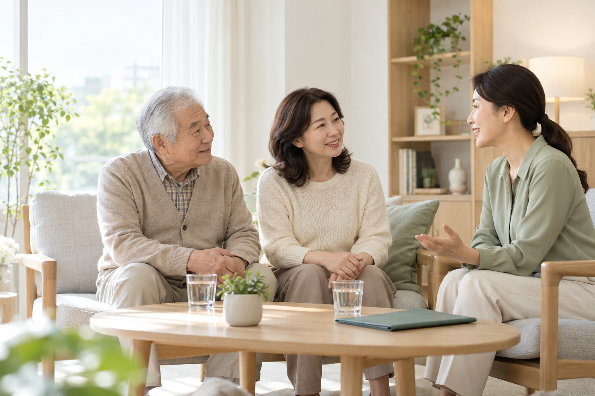
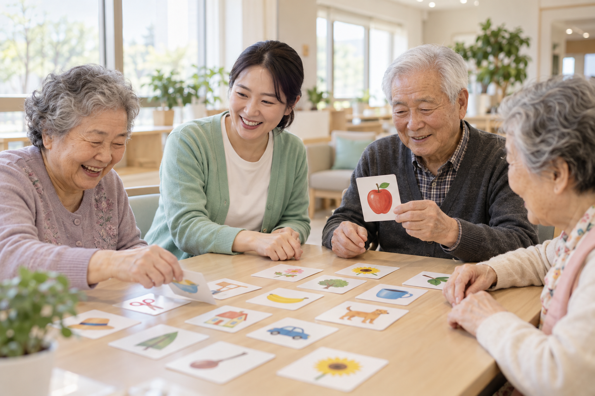
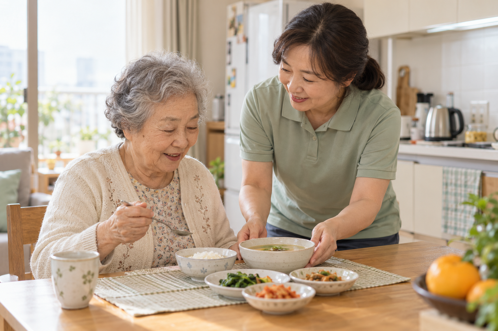

밝은 자연광 · 아이보리 공간 · 은은한 민트색히어로 2장과 요양원·주야간보호·방문요양·상담용 4장입니다.
첫 화면 우선 추천. 가족의 마음과 편안함을 전달합니다.

직접 상담과 연결을 강조하는 첫 화면 대안입니다.
요양원 서비스 소개에 사용할 수 있습니다.

주야간보호 서비스 소개에 사용할 수 있습니다.

방문요양 서비스 소개에 사용할 수 있습니다.
상담 진행 안내와 상담 신청 영역에 사용할 수 있습니다.